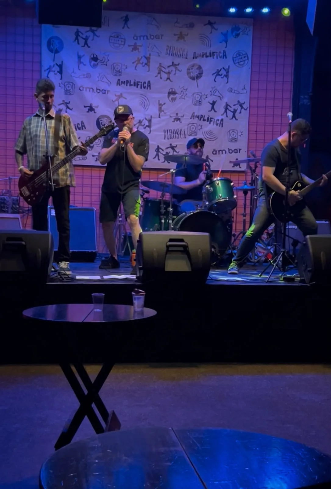
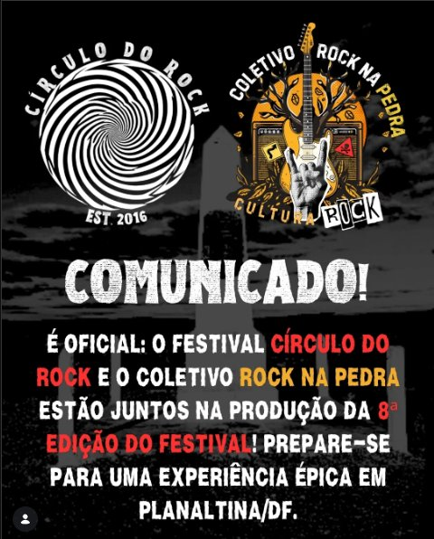
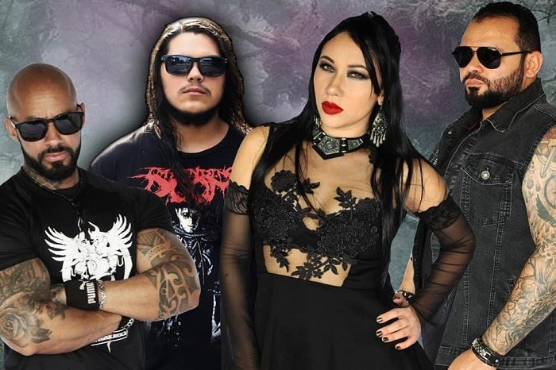
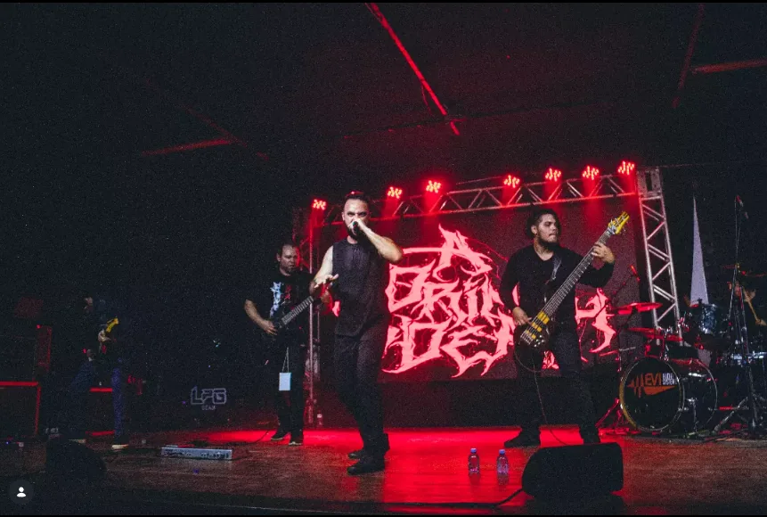
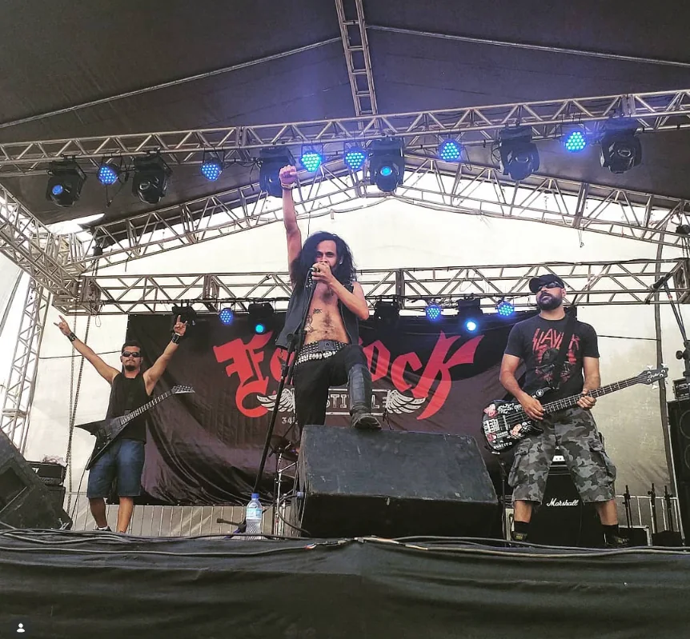
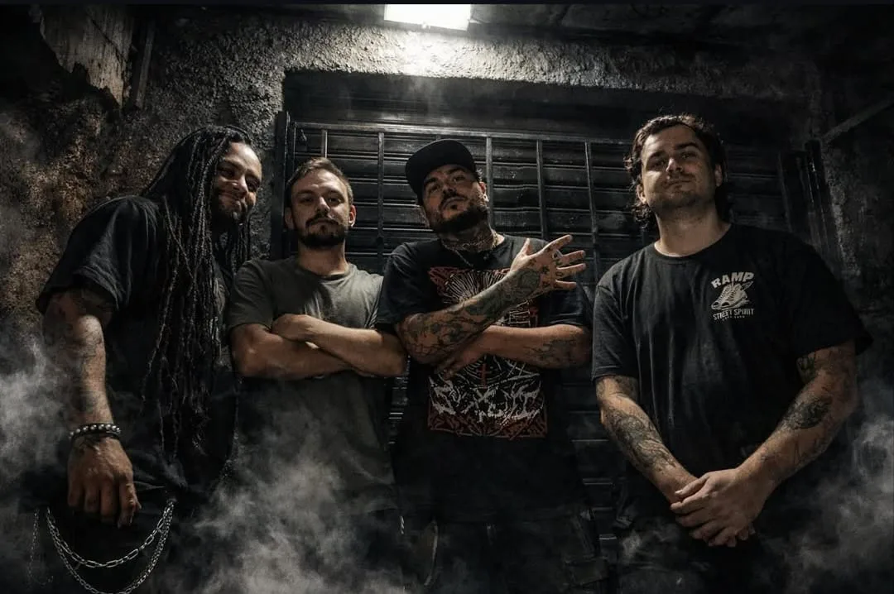
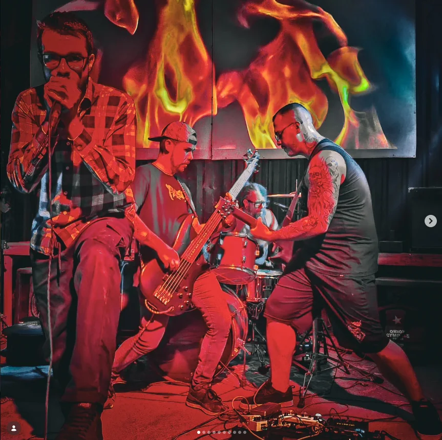
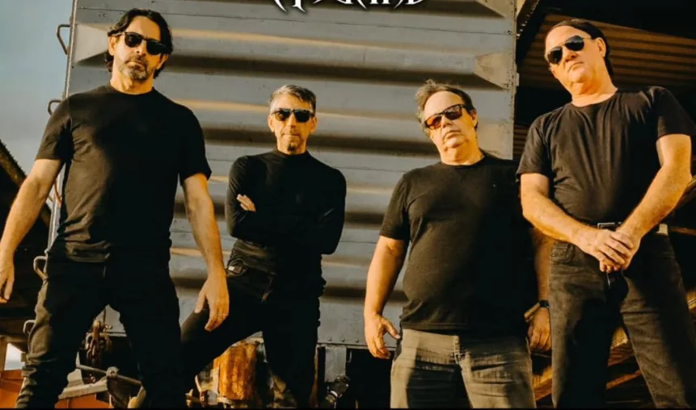
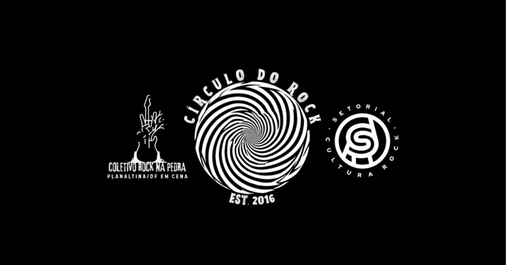

CÍRCULO DO ROCK Planaltina / DF
Festival Independente de Cultura Rock | Entrada Gratuita
◆
◆ O Evento
COMUNICADO OFICIAL

É oficial! O Festival Círculo do Rock e o Coletivo Rock na Pedra estão juntos na produção da 8ª edição do festival | comemorando 10 anos de resistência e atuação em Planaltina/DF.
Uma união de experiência e paixão para celebrar a cena independente do Distrito Federal, com uma imersão completa na cultura underground.
O evento acontece no Centro Cultural de Planaltina/DF com entrada gratuita para toda a comunidade. Rock para o povo!
📸 @coletivorocknapedra 📸 @circulodorockdf
◆
◆ Acompanhe
ÚLTIMAS NOVIDADES
Coletivo Rock na Pedra × Círculo do Rock | Anúncio Oficial da 8ª Edição
◆
◆ As Atrações
BANDAS CONFIRMADAS
Conheça as sete bandas confirmadas para a 8ª edição e acesse os canais oficiais de cada atração.






◆
Inscrição oficial
GARANTA SEU INGRESSO
A entrada é gratuita, mas o ingresso deve ser emitido pela página oficial do evento no Sympla. Use o botão abaixo ou aponte a câmera para o QR Code.
Você será direcionado ao ambiente do Sympla para concluir a emissão do ingresso. No celular, use o botão acima. O QR Code é ideal para leitura a partir de outro aparelho.◆
◆ Informações
O FESTIVAL
Local
Centro Cultural de Planaltina
Planaltina | Distrito Federal
Acesso fácil pelo transporte público
Planaltina | Distrito Federal
Acesso fácil pelo transporte público
Ingresso
GRATUITO
Entrada franca para toda a comunidade. Emita o ingresso oficial antecipadamente pelo Sympla.
Emitir ingresso
Entrada franca para toda a comunidade. Emita o ingresso oficial antecipadamente pelo Sympla.
Emitir ingresso
8ª Edição
Comemorando 10 anos de resistência cultural em Planaltina/DF.
Cena underground independente do DF.
Cena underground independente do DF.
Redes Sociais
◆ Parceiros
Círculo do Rock | Est. 2016
Coletivo Rock na Pedra
Setorial de Cultura Rock / DF
Rock CEI
◆ União pela cena
REALIZAÇÃO E PARCERIA CULTURAL
